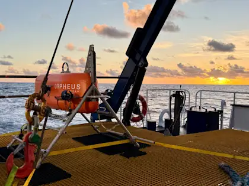
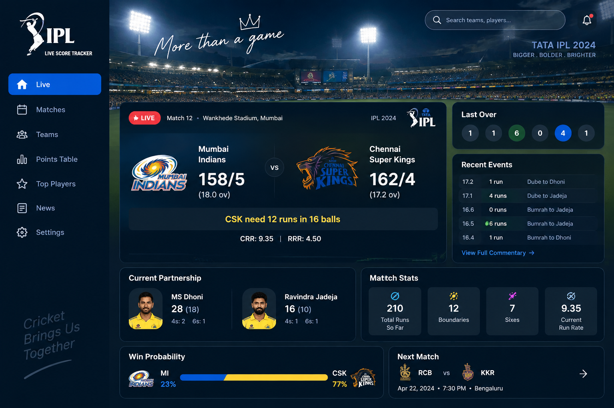
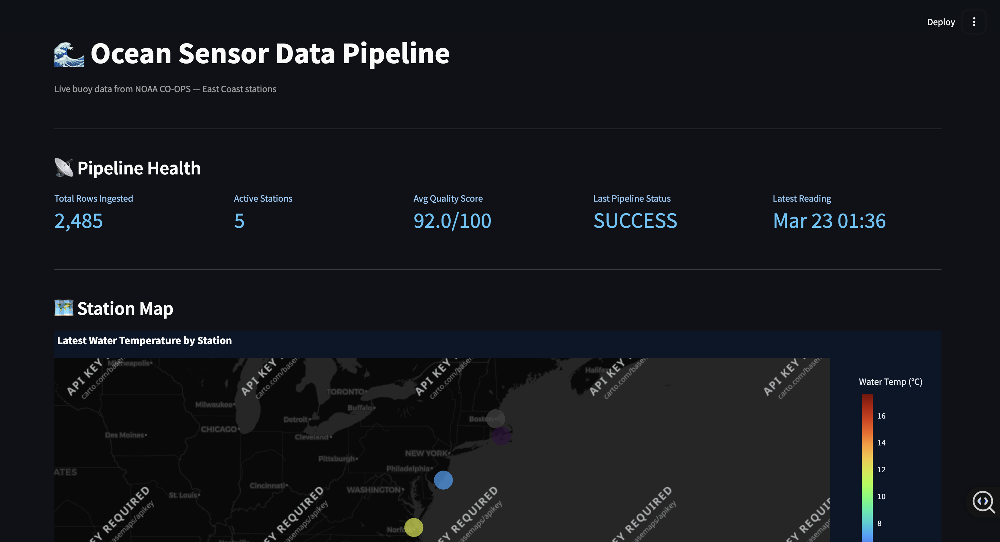
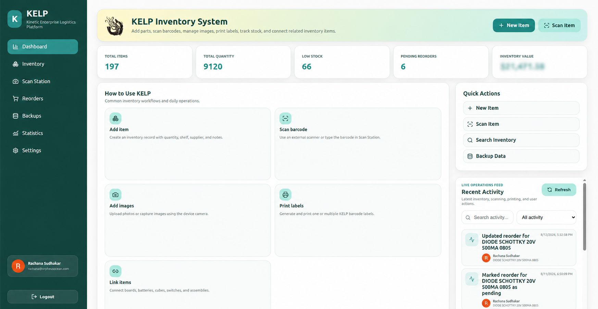
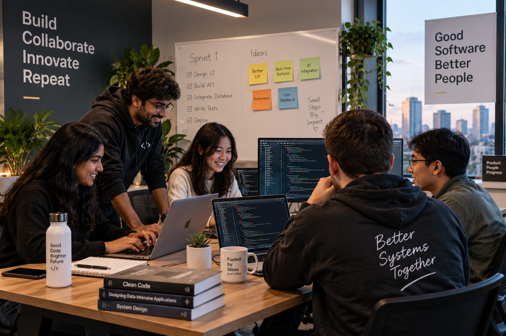

I think in systems
I like understanding the full path, not only my screen or service.
Frontend
Backend
Data
ROS2
Infrastructure
I work across full-stack software, AI, data, and robotics. I care about how a system feels to use and how reliably it works underneath.

Each trait comes from how I approach real projects.
I like understanding the full path, not only my screen or service.
Break the problem into layers. Verify each step. Find the real failure.
Useful software needs clear feedback, validation, and sensible defaults.
Simulation, edge cases, and repeatable checks are part of the build.
From web apps to robotics and AI, I enjoy learning the system in front of me.
Shared tools, maintainable code, documentation, and smoother workflows matter.
Click a category to filter the cards.
React, TypeScript, responsive UI, reusable components.
FastAPI, Node.js, Java/Spring, REST, auth and validation.
WebSockets, event-driven updates, telemetry synchronization.
ROS2 nodes, topics, services, Gazebo and control workflows.
TensorFlow, transfer learning, image classification, model inference.
PostgreSQL, MySQL, validation pipelines, API-driven data flows.
Docker, Linux, on-prem servers, NAS-backed team services.
Simulation, workflow validation, edge cases and stage-by-stage debugging.
Click any card to see more detail.






Short timeline. Bigger scope each step.

Algorithms, software design, projects, and academic consistency.
Responsive interfaces, live applications, and data-backed systems.
AI, systems, full-stack development, and deeper engineering thinking.
ROS2, telemetry, simulation, vehicle controls, and infrastructure.
Full-stack + AI + data + distributed and system-design thinking.
A little more personality, without another wall of text.